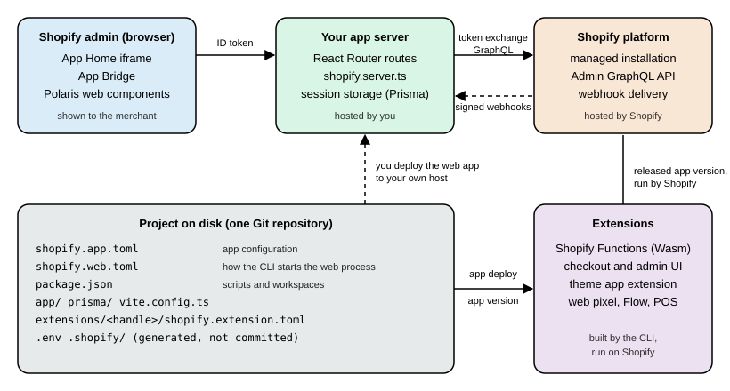

Apps Overview and Scaffolding
|
This content was generated with the assistance of AI and should be verified against the official documentation before being relied on in production. |
This page was written against Shopify CLI 5.0.0 (published 2026-10-27, requires Node.js 22.12 or later), the Admin API
version 2026-10, the React Router app template (repository Shopify/shopify-app-template-react-router, commit
48b841a of 2026-10-09, which pins React Router 7.18.2 and depends on @shopify/shopify-app-react-router at ^3.0.1, so a
fresh install resolves 3.0.2; version 4.0.0 of that package was published on 2026-10-21), @shopify/app-bridge-react
4.2.14 and Polaris web components (the default CDN channel serves 1.1; 2.0 is stable since 2026-10-22). Everything was
checked on 2026-10-27. Apps are available on every Shopify plan; the places where a capability needs Shopify Plus (for
example a custom app that contains a Shopify Function, or one custom app installed on several stores of a Plus
organization) are named where they appear.
An app is the unit through which code reaches a shop: it is installed by a merchant, holds a set of access scopes,
calls the Admin GraphQL API, receives webhooks, and can ship extensions that Shopify itself hosts and runs. This page
is the entry point of the app part of the Shopify subsection. It explains how apps are distributed, how to scaffold one
with shopify app init, what the React Router template contains file by file, how to move a Remix app to it, every key
of shopify.app.toml, and how an app project is laid out on disk. Authentication, Polaris and App Bridge, webhooks, the
Admin API, Functions and deployment each have their own page (see Authentication and Access Scopes, App UI: Polaris and App Bridge, Webhooks and Events, Shopify Functions and Billing, App Store and Deployment); here they appear only as far as the scaffolding needs them. Tooling setup, dev stores and the AI tooling are in Development Environment.
The running example is Pocket Coffee, a small specialty-coffee shop. Its developer builds one app, Pocket Coffee Tools, in the pages that follow: an order logger driven by a webhook, a Coffee Club discount implemented as a Function, and a roast-date badge. This page creates the project, the configuration and the webhook route.
What a Shopify app is made of
A Shopify app built with Shopify CLI has four parts. The app record lives on Shopify (in the Dev Dashboard): it holds
the client ID and client secret, the icon and contact details merchants see, the distribution method and the released
app versions. The configuration is the shopify.app.toml file in the project; shopify app deploy copies it into an
app version. The optional web app is a server you host yourself, which renders the app’s page inside the Shopify admin
and receives webhooks. The extensions are small units of code or configuration (a checkout block, a discount Function,
a theme block) that are built by the CLI, uploaded with the app version and executed by Shopify, so they need no server of
yours.

Two consequences follow. Releasing an app version never deploys the web app: shopify app deploy publishes
configuration and extensions only, and the web app goes to a host of your choice. And a lightweight app can have no web
app at all: an extension-only app is made of extensions only and needs no hosting.
Choosing the app type
The way an app reaches merchants is its distribution method, chosen once per app. Shopify states that it cannot be changed after it is selected, and recommends choosing it on the production app when development and production are separate apps. The older words "public app" and "custom app" still describe the two methods.
Distribution methods
| Method | Where it installs | Authentication | Shopify approval | Limits |
|---|---|---|---|---|
Public distribution |
Any number of stores |
Token exchange when embedded; authorization code grant when not embedded |
Yes, App Store review |
Must sync certain data with Shopify under the API terms; may bill through Shopify |
Custom distribution |
One store, several stores of the same Plus organization, or development stores |
Token exchange when embedded; authorization code grant when not embedded |
No |
Cannot charge merchants through Shopify’s billing system |
Admin-created custom app (no longer available for new apps) |
One store |
A pre-generated Admin API access token |
No |
Cannot be created any more; cannot use App Bridge or app extensions; cannot use Shopify billing |
Public distribution is for software sold to many merchants through the Shopify App Store. It requires the App Store requirements and review, and it is the only method that Shopify’s own billing can charge for. Custom distribution is for software written for one merchant or one Plus organization: Shopify generates an install link and the developer sends it to the store owner. A custom app can be installed on several stores only when they belong to the same Plus organization, and that option can be switched off when the link is generated (the setting is called Allow multi-store installs for one Plus organization). Apps whose App Home is a Shopify-hosted UI extension can use custom distribution only.
Two older app types can no longer be created: private apps (deprecated January 2022, automatically converted to custom apps on 2023-01-20) and unpublished apps (deprecated 2019-12-09). The admin-created custom app, built under Settings, Apps, Develop apps inside the Shopify admin, is a third legacy form: existing ones keep working, new ones cannot be created, and Shopify directs new work to the Dev Dashboard or to Shopify CLI.
A decision path for Pocket Coffee Tools
Pocket Coffee is one merchant, so the order logger and the Coffee Club discount only ever install on its own store: custom distribution fits. If the same developer later sells the roast-date badge to other roasters, that part becomes a separate public app. The flowchart condenses the choice.
Where the app is created: Shopify CLI or Dev Dashboard
Every app of an organization appears in the Dev Dashboard (dev.shopify.com/dashboard), whichever tool created it. The
Dev Dashboard was relaunched on 2026-09-25 as the home for apps, stores, collaborator access and app health; the Partner
Dashboard is still used for App Store submission and quality checks. There are two ways to create an app.
-
Shopify CLI (
shopify app init) is the recommended path for feature-rich apps. The configuration is code (shopify.app.toml), extensions and Functions are available, and the web app and extensions are developed and deployed together. -
The Dev Dashboard ("Start from Dev Dashboard") suits simple integrations: connecting an existing system, automation, or API-only work with no UI in the admin. The developer fills in a version (app URL, webhook API version, scopes) and releases it. Extensions and Functions need the CLI, because only the CLI can build an app version that includes them.
An app created in the Dev Dashboard can be moved under CLI management later: scaffold an extension-only project with
shopify app init, run shopify app config link, choose to connect it to an existing app, and check the imported
shopify.app.toml. From then on a change is made in the file and released with shopify app deploy. The reasons Shopify
gives are version control of the configuration, access to extensions and Functions, settings that only the CLI manages
(handles), and managing staging and production apps from one project.
An app that acts only on stores of the developer’s own organization needs no merchant install: it authenticates with the client credentials grant using its client ID and secret and receives a token valid for 24 hours. This is the usual choice for an integration between Pocket Coffee’s own back office and its store.
Other languages and stacks
React Router (Node.js) is Shopify’s recommended stack and the only app template shopify app init offers apart from the
extension-only one. Shopify’s official libraries cover other stacks. On 2026-08-26 Shopify released official PHP
(shopify/shopify-app-php on Packagist) and Python (shopifyapp on PyPI) packages at version 1.0, which provide
request verification, token exchange (including client credentials and refresh) and an Admin GraphQL client with
retries; the older shopify-api-php and shopify_python_api libraries are deprecated. There is no PHP or Python app
template, so those projects scaffold their own code, and the CLI remains available for configuration and extensions.
Prerequisites and installing Shopify CLI
Shopify CLI 5.0.0 needs Node.js 22.12 or later (the engines.node field of the package says >=22.12.0), a package
manager (npm, Yarn 1.x or pnpm) and Git; the documentation says Git 2.28.0 or later, and the 5.0.0 release notes add that
Git operations require Git 2.38.0 or later. It also needs a current Chrome or Firefox for the login and preview flows.
Install it globally, which Shopify recommends because it gives one install and upgrade point for apps, themes and Hydrogen:
npm install -g @shopify/cli@latest
shopify versionSource: Shopify docs: Shopify CLI
Yarn global and pnpm work the same way, and Homebrew on macOS offers brew tap shopify/shopify && brew install
shopify-cli. The CLI can instead be a local dependency of the app (npm install -D @shopify/cli, then
npm run shopify <command>), which is useful to pin one CLI version for a whole team. Since version 3.59.0 the separate
@shopify/app package is bundled into @shopify/cli and must not be installed. The React Router template removed its
local CLI dependency in August 2025 in favour of the global install, but its package.json still defines scripts such as
dev and deploy that call shopify app commands.
CLI 4.0.0 (2026-05-21) introduced semantic versioning and automatic upgrades. Auto-upgrade is skipped in CI, for
project-local installs and for major releases, and shopify config autoupgrade off disables it. Usage data (commands,
flags, timings, errors and identifiers such as the app API key and the store domain) is collected by default; set
SHOPIFY_CLI_NO_ANALYTICS=1 or OPT_OUT_INSTRUMENTATION=true to opt out. CLI 4.0.0 also removed --force from
app deploy and app release, app generate extension --type (use --template), app generate schema (use
app function schema) and app webhook trigger --shared-secret (use --client-secret); scripts written for 3.x break
on these.
Source: Shopify CLI 4.0.0 release notes
A developer account is needed for everything that talks to Shopify, and so is a development store to install the app on
(shopify store create dev, or Create store in the Dev Dashboard). Development stores are always password protected,
cannot be transferred, are limited to 250 per organization, and take test payments with the Test payment gateway or a
provider’s test mode. The commands that need that identity are listed at the end of this page together with what was and
was not executed.
Creating the project with shopify app init
shopify app init creates a new directory with a working app. Run interactively it logs in, asks for the template, the
organization and the app name, creates the app record in the Dev Dashboard, writes the project, links it with
shopify.app.toml and installs dependencies:
cd ~/projects
shopify app initSource: Shopify docs: Scaffold an app
The prompts, in order, are: log in to the developer account (a Partner account or a merchant account with the right
permissions); choose Build a React Router app (the other choice is Build an extension-only app); choose the
organization that owns the dev store; confirm Yes, create it as a new app; and enter a name. The project is created in a
new subdirectory. To pick the template without the prompt, pass --template.
Flags
| Flag | Meaning |
|---|---|
|
Name of the new app; skips the app selection prompt. Required in non-interactive runs unless |
|
Directory in which to create the project (default: the current directory). |
|
|
|
|
|
|
|
Organization ID, found in the Dev Dashboard URL |
|
Client ID of an existing app: links the new project to that app instead of creating one. |
|
Disables prompts and browser authentication. |
|
Prints the result as JSON (the |
|
Print the schemas, choose which logged-in account to use, disable color, print more output. |
Source: Shopify docs: shopify app init
Both forms from the CLI help follow. The first creates a new app non-interactively; the second links a new project to an existing app and uses the empty template.
shopify app init --name pocket-coffee-tools --organization-id <your-organization-id> --template reactRouter --flavor typescript
shopify app init --client-id <your-client-id> --template noneSource: Shopify docs: shopify app init
The same command accepts a template URL, which is how the React Router template is referenced in Shopify’s own package documentation:
shopify app init --template=https://github.com/Shopify/shopify-app-template-react-routerTemplates
| Value | What is created |
|---|---|
|
A full-stack embedded app: a React Router 7 server with App Bridge and Polaris web components, session storage in
Prisma (SQLite by default), an |
|
An extension-only app, with no web app of its own: configuration plus an |
GitHub URL |
Any repository laid out as a Shopify app project, for example the React Router template itself. |
An extension-only app can also get a developer-hosted App Home page: set application_url to the hosted URL. That is
the route to public distribution, because the Shopify-hosted App Home UI extension is restricted to custom distribution.
The old Remix template is no longer offered: the --template option of CLI 5.0.0 names only reactRouter and none
(plus URLs). Apps created from the Remix template keep working, and the migration is described later on this page.
What the CLI does after the project exists
The scaffolded project is connected to the Dev Dashboard app it created. The first shopify app dev or
shopify app config link updates shopify.app.toml to reflect the linked app (the template ships it with an empty
client_id). The generated project also handles authentication: the template performs the token exchange so the
developer never writes an OAuth flow. Once the project exists, cd into it and run
shopify app dev (see the development loop below), press p to open the preview URL, and click Install app on the
dev store. The home page of the template then offers a Generate a product button that runs a productCreate mutation.
What was not executed
The login that app init needs creates a developer session, and no account or login is used while writing this page, so
shopify app init was run only as far as its refusal. In a non-interactive shell it stops with: "To run this command, log
in to Shopify. Authorization is required to continue, but the current environment does not support interactive prompts."
and creates nothing. It also reports missing flags (--name or --client-id, --organization-id or --client-id, and
--flavor) before authenticating when they are absent. All the project-level steps (typecheck, production build, lint,
running the built server with placeholder values, validating configuration) were executed on a copy of the public
template, and are reported where they appear below.
The React Router template
The template is the open-source repository Shopify/shopify-app-template-react-router. Shopify states that it is forked
from the Remix template and converted to React Router, and that the template is the recommended path. Rather than cloning
the repository, scaffold with shopify app init so the project is linked to an app record.
Directory layout
pocket-coffee-tools/
shopify.app.toml app configuration
shopify.web.toml how the CLI builds and runs the web process
package.json scripts, dependencies, workspaces (extensions/*)
vite.config.ts Vite and React Router plugin, dev server and HMR settings
tsconfig.json env.d.ts TypeScript configuration
.graphqlrc.ts GraphQL codegen for the Admin API and for each extension
.eslintrc.cjs .prettierignore lint configuration
.npmrc engine-strict and shamefully-hoist
Dockerfile container build for production
prisma/
schema.prisma Session model (SQLite by default)
migrations/
app/
root.tsx HTML shell
routes.ts flat-file routing
entry.server.tsx streaming server render and Shopify response headers
shopify.server.ts the shopifyApp() configuration and its exports
db.server.ts Prisma client
routes/
_index/route.tsx public landing page and shop login form
auth.$.tsx authentication callback routes (splat)
auth.login/route.tsx login form for non-embedded entry
app.tsx layout route of the embedded app
app._index.tsx home page of the app
app.additional.tsx second page that shows navigation
webhooks.app.uninstalled.tsx handler for the app/uninstalled topic
webhooks.app.scopes_update.tsx handler for the app/scopes_update topic
extensions/ empty; extensions are generated here
public/The repository also carries development-assistant files (AGENTS.md, CLAUDE.md, .mcp.json for the Shopify Dev MCP, a
Gemini extension and Cursor settings) and a CHANGELOG.md. The template’s changelog is the quickest way to see what
changed between scaffolds: 2026.10.09 moved the API version to 2026-10; 2026.09.03 pinned React Router to 7.18.2 because
7.18.3 tightened origin validation of actions and made every action return 400 Bad Request under shopify app dev and
behind TLS-terminating proxies, and forced qs to ^6.16.0 to clear two advisories; 2025.12.11 added the refresh-token
fields and the expiringOfflineAccessTokens flag.
shopify.server.ts: the central configuration
Every other file imports from app/shopify.server.ts. It calls shopifyApp() once and re-exports the pieces.
import "@shopify/shopify-app-react-router/adapters/node";
import {
ApiVersion,
AppDistribution,
shopifyApp,
} from "@shopify/shopify-app-react-router/server";
import { PrismaSessionStorage } from "@shopify/shopify-app-session-storage-prisma";
import prisma from "./db.server";
const shopify = shopifyApp({
apiKey: process.env.SHOPIFY_API_KEY,
apiSecretKey: process.env.SHOPIFY_API_SECRET || "",
apiVersion: ApiVersion.October26,
scopes: process.env.SCOPES?.split(","),
appUrl: process.env.SHOPIFY_APP_URL || "",
authPathPrefix: "/auth",
sessionStorage: new PrismaSessionStorage(prisma),
distribution: AppDistribution.AppStore,
future: {
expiringOfflineAccessTokens: true,
},
...(process.env.SHOP_CUSTOM_DOMAIN
? { customShopDomains: [process.env.SHOP_CUSTOM_DOMAIN] }
: {}),
});
export default shopify;
export const apiVersion = ApiVersion.October26;
export const addDocumentResponseHeaders = shopify.addDocumentResponseHeaders;
export const authenticate = shopify.authenticate;
export const unauthenticated = shopify.unauthenticated;
export const login = shopify.login;
export const registerWebhooks = shopify.registerWebhooks;
export const sessionStorage = shopify.sessionStorage;The first import selects the Node adapter, which supplies the Web fetch and crypto implementations the package expects. The options and what they do:
| Option | Meaning |
|---|---|
|
The app’s client ID and client secret. |
|
The Admin API version used by |
|
Taken from the |
|
The public URL of the app. During development it is the tunnel URL in |
|
The path Shopify reserves for authentication endpoints (default |
|
Where sessions, and so access tokens, are stored. Optional for apps created in the Shopify admin. The template uses the Prisma adapter. |
|
|
|
Turns on 1-hour offline tokens with refresh tokens, refreshed automatically. Required for all public apps from 2027-01-01 and for new public apps since 2026-04-01. |
|
Extra domains that count as shop domains, read here from |
|
Not set in the template. When |
|
Not set in the template. Runs after a merchant installs the app and when a token expires. |
|
Not set in the template. Shop-specific webhook subscriptions registered in code; app-specific subscriptions in the TOML file are recommended. |
|
Not set in the template. Line-item billing plans for the Billing API. |
|
URL of the Polaris web components script for the preload header; must equal the value passed to |
|
Log level and handler. |
Source: Shopify docs: shopifyApp
What the object offers: authenticate.admin (for requests from the app’s UI or from admin extensions),
authenticate.webhook, authenticate.public, authenticate.flow, authenticate.fulfillmentService and
authenticate.pos; unauthenticated.admin and unauthenticated.storefront for background work that has an offline
session; login for the shop-domain form; registerWebhooks; addDocumentResponseHeaders; and sessionStorage.
authenticate.admin returns the session, an admin client whose only method is graphql, a billing helper, a cors
helper, the decoded sessionToken, a redirect helper and scopes (with query, request and revoke). The Admin
client has no REST method: the package removed REST, as the migration section explains.
Routes, layout and the shell
app/routes.ts is one line, export default flatRoutes();, so file names map to URLs: app._index.tsx is /app,
app.additional.tsx is /app/additional, webhooks.app.uninstalled.tsx is /webhooks/app/uninstalled. app.tsx is the
layout route of every page below /app:
import type { HeadersFunction, LoaderFunctionArgs } from "react-router";
import { Outlet, useLoaderData, useRouteError } from "react-router";
import { boundary } from "@shopify/shopify-app-react-router/server";
import { AppProvider } from "@shopify/shopify-app-react-router/react";
import { authenticate } from "../shopify.server";
export const loader = async ({ request }: LoaderFunctionArgs) => {
await authenticate.admin(request);
return { apiKey: process.env.SHOPIFY_API_KEY || "" };
};
export default function App() {
const { apiKey } = useLoaderData<typeof loader>();
return (
<AppProvider apiKey={apiKey}>
<s-app-nav>
<s-link href="/app">Home</s-link>
<s-link href="/app/additional">Additional page</s-link>
</s-app-nav>
<Outlet />
</AppProvider>
);
}
// Shopify needs React Router to catch some thrown responses, so that their headers are included in the response.
export function ErrorBoundary() {
return boundary.error(useRouteError());
}
export const headers: HeadersFunction = (headersArgs) => {
return boundary.headers(headersArgs);
};The layout does four jobs. Its loader calls authenticate.admin(request), which validates the ID token, performs the
token exchange and, when there is no session, redirects through the right authentication flow. AppProvider loads App
Bridge and the Polaris web components script and needs the client ID, which the loader passes down because the browser
cannot read process.env. s-app-nav declares the navigation menu in the admin sidebar, built from s-link elements
(the older documentation shows NavMenu from App Bridge React with Link children; both exist). The ErrorBoundary
and headers exports are required: Shopify needs React Router to catch some thrown responses so their headers survive,
and the boundary helpers do that. Every route that calls authenticate.admin must export headers the same way.
The other routes:
| File | Purpose |
|---|---|
|
The HTML document: charset, viewport, preconnect to |
|
Streams the render with |
|
The public landing page. If the URL has a |
|
Renders the login form with Polaris components and passes the submission to |
|
A splat route whose loader calls |
|
The home page. Its action runs a |
|
A second page that shows how a page appears in the app navigation. |
|
Authenticates the webhook and deletes the shop’s sessions. |
|
Authenticates the webhook and stores the new scope list in the session row. |
Webhook routes must not be nested under the app layout route, because Shopify calls them without an admin session. That
is why their file names start with webhooks. and not with app..
A first custom route: the order logger
Pocket Coffee wants the line "order placed" with the order number and the total in its log. That needs a webhook subscription in the configuration and a route to receive it. The subscription asks for only the three fields the handler reads:
[[webhooks.subscriptions]]
topics = ["orders/create"]
uri = "/webhooks/orders/create"
include_fields = ["id", "name", "total_price_set"]Source: Shopify docs: App configuration
and the route, app/routes/webhooks.orders.create.tsx:
import type { ActionFunctionArgs } from "react-router";
import { authenticate } from "../shopify.server";
interface OrderCreatePayload {
id: number;
name: string;
total_price_set: { shop_money: { amount: string; currency_code: string } };
}
export const action = async ({ request }: ActionFunctionArgs) => {
const { topic, shop, payload } = await authenticate.webhook(request);
const order = payload as unknown as OrderCreatePayload;
const total = order.total_price_set.shop_money;
// Pocket Coffee: log "order placed" with the order number and the total.
console.log(`order placed ${order.name} total ${total.amount} ${total.currency_code} (${topic} from ${shop})`);
return new Response();
};The orders/create topic needs the read_orders scope, so the scope list in shopify.app.toml must contain it (the
configuration example below does). The route was added to a copy of the template and run: npm run typecheck passed, the
production build passed, and the built server was started with placeholder values (SHOPIFY_API_KEY of 32 zeros, a
made-up secret, SHOPIFY_APP_URL=https://pocket-coffee-app.example.test). A hand-signed request, with a synthetic
payload and the made-up secret, returned 200 and logged order placed #1001 total 38.80 EUR (ORDERS_CREATE from
pocket-coffee-dev.myshopify.com); the same signature on a changed body returned 401. The topic arrives in the enum
form ORDERS_CREATE, not orders/create. No request left the machine and no real order or store was involved.
Session storage and Prisma
prisma/schema.prisma defines one model, Session, with the columns id, shop, state, isOnline, scope,
expires, accessToken, userId, firstName, lastName, email, accountOwner, locale, collaborator,
emailVerified, and, for expiring offline tokens, refreshToken and refreshTokenExpires. The datasource is
file:dev.sqlite. SQLite is fine for a single running instance, which is the case for Pocket Coffee’s one store, but a
multi-instance deployment needs another Prisma datasource or a different session-storage adapter (MySQL, PostgreSQL, Redis
and MongoDB adapters exist). If a route fails with "The table main.Session does not exist", run the setup script, which
is prisma generate && prisma migrate deploy. The .env files, prisma/dev.sqlite and the .shopify directory are
git-ignored by the template; the lockfiles are ignored too, which conflicts with Shopify’s recommendation to commit the lock file of the package manager,
so teams usually remove those lines.
Scripts, Vite and the web process
| Script | Runs |
|---|---|
|
|
|
|
|
|
|
|
|
|
|
Shortcuts to the matching |
|
ESLint, and |
|
The tools themselves |
vite.config.ts contains two non-obvious pieces. It replaces the HOST variable the CLI sets with SHOPIFY_APP_URL,
because a HOST value breaks the Vite server (the comment says the CLI will stop passing it in a later major release);
and it picks the hot-module-reload settings from the host name, WebSocket on port 64999 for localhost and secure
WebSocket on FRONTEND_PORT (default 8002) through port 443 for a tunnel. The server listens on PORT (default 3000).
.graphqlrc.ts configures GraphQL code generation for the Admin API version 2026-10 over the files below app/ and adds one project
per extension that has a schema.graphql. .npmrc sets engine-strict=true, which makes an old Node.js fail the install,
and shamefully-hoist=true, which recent npm versions report as an unknown project setting; the warning is harmless.
The Dockerfile starts from node:22-alpine, installs OpenSSL, runs npm ci --omit=dev, builds the app and starts it with
npm run docker-start. The template’s own workflow runs typecheck, ESLint, prisma validate and the build on Node 22
and 24 with npm, Yarn and pnpm.
Checks that were run on the template
| Step on a copy of the template | Result |
|---|---|
|
Installs React Router 7.18.2, |
|
Passes with zero errors. Without |
|
Builds the client and server bundles with Vite 7.3.7; prints future-flag warnings about React Router 8 (middleware, route-module splitting, Vite Environment API, request pass-through, trailing-slash-aware data requests). |
|
Passes. |
|
Applies the single migration |
Built server with placeholder values: |
|
|
|
|
|
|
|
|
|
The same, with Shopify headers and a wrong HMAC |
|
Source: Shopify docs: Scaffold an app
The webhook status codes follow Shopify’s rule that an invalid HMAC must receive 401 Unauthorized; a request without the
Shopify headers is rejected earlier with 400.
Migrating from Remix to React Router
Shopify’s first app template was built on Remix. React Router 7 is the continuation of Remix, and Shopify forked the
Remix package into @shopify/shopify-app-react-router. The Remix package is still published (6.0.2, 2026-10-08), but
the CLI no longer offers the Remix template, the documentation tells readers that the React Router package is the
recommended path, and the upgrade guide says support for the Remix package is limited to critical security issues. A new
project should not start on Remix, and an existing one should plan the move, because the new template is where UI,
authentication and token changes land first (Polaris web components, expiring offline tokens).
What the React Router package drops or changes
| Area | Change |
|---|---|
REST |
The REST Admin client was removed from the package; |
Non-embedded apps |
Not supported in the React Router package (about 2 percent of Remix apps). Move the app to embedded or stay on the Remix package. |
Authorization code flow |
Only Shopify managed installation with token exchange exists. Before migrating an embedded Remix app, enable the
|
|
Removed; use a plain lowercase |
Polaris |
Polaris React is replaced by Polaris web components ( |
Package name and imports |
|
|
|
Loaders and actions |
React Router 7 single fetch: return plain objects, not |
The migration steps
Shopify publishes two example migration branches (the template itself, and the QR code example app) and a step list. In order:
-
Adopt Vite if the app predates 2024-02-21 (the Vite plugin for Remix).
-
Adopt the Remix future flags one by one: remove
installGlobalsfromvite.config.tsand changeengines.nodeinpackage.json; add@remix-run/nodeandvite/clienttotypesintsconfig.json; turn onv3_singleFetch; removejson()from loaders and actions; optionally replace the ESLint and TypeScript configurations with the recommended ones. With single fetch, response headers are handled differently, so each route that callsauthenticate.adminmust add:import { boundary } from "@shopify/shopify-app-remix/server"; import type { HeadersFunction } from "@remix-run/node"; export const headers: HeadersFunction = (headersArgs) => { return boundary.headers(headersArgs); }; -
Upgrade to React Router with the codemod, then check
app/routes.tsand simplify the Vite plugin:npx codemod remix/2/react-router/upgrade && npm installimport { flatRoutes } from "@react-router/fs-routes"; export default flatRoutes();In
vite.config.ts, replace thereactRouter({ ignoredRouteFiles, future: {...} })call withreactRouter(). -
Tell the CLI how to run it in
shopify.web.toml: thenamebecomesReact Routerand thedevcommand becomesnpx prisma migrate deploy && npm exec react-router dev. -
Enable route type generation: ignore
.react-router/in.gitignore, pointenv.d.tsto@react-router/node, and add.react-router/types/**/*toincludeand./.react-router/typestorootDirsintsconfig.json. -
Swap the Shopify package: replace the dependency, then the imports in
app/shopify.server.ts, every route that importsboundaryandapp/routes/auth.login/error.server.tsx. -
Switch to App Bridge and Polaris web components: delete the Polaris React stylesheet link and
PolarisAppProviderfromapp/routes/app.tsxand the login route, renameisEmbeddedApptoembedded, and importAppProviderfrom@shopify/shopify-app-react-router/react(useembedded={false}on the login page). Add the@shopify/polaris-typespackage (called@shopify/app-bridge-ui-typesin older guides) totsconfig.jsontypesso thes-*elements type-check, and addvariantto the ignore list ofreact/no-unknown-propertyin ESLint. -
Port the UI from Polaris React to web components, route by route. The template and the QR code example each have a commit that shows a full conversion of the login route.
The login route is the smallest worked case:
// before (Polaris React)
<Page>
<Card>
<Form method="post">
<FormLayout>
<Text variant="headingMd" as="h2">Log in</Text>
<TextField type="text" name="shop" label="Shop domain" value={shop} onChange={setShop} error={errors.shop} />
<Button submit>Log in</Button>
</FormLayout>
</Form>
</Card>
</Page>
// after (Polaris web components)
<s-page>
<Form method="post">
<s-section heading="Log in">
<s-text-field name="shop" label="Shop domain" value={shop} error={errors.shop}></s-text-field>
<s-button type="submit">Log in</s-button>
</s-section>
</Form>
</s-page>After the swap, three template changes are worth adopting even though the guide predates them: set
future.expiringOfflineAccessTokens and add the two refresh-token columns to the Prisma Session model (required for
public apps from 2027-01-01), bump apiVersion, and move @shopify/api-codegen-preset and .graphqlrc.ts to the
React Router package. The migration was not executed here, because it needs an existing Remix app and the codemod; the
steps above are Shopify’s, and what this page verified is the target: the resulting template type-checks, builds and
serves as described in the previous section.
The shopify.app.toml reference
shopify.app.toml is the root of the project and the only file the CLI requires. It holds app-level metadata and
configuration. The first time app dev or app config link runs, the file is updated to reflect the linked app. Changes
are applied automatically by app dev to the chosen development store only; to take effect in production they must be
released with shopify app deploy, which creates an app version. Much of this configuration can also be edited in the Dev
Dashboard, but a few things live only there: client ID and secrets, the icon and contact email merchants see, app
automation tokens, and an Amazon EventBridge destination for webhooks.
The template’s file is almost empty, because linking fills in the rest:
# This file stores configurations for your Shopify app.
client_id = ""
[access_scopes]
scopes = "write_products"
[webhooks]
api_version = "2026-10"
[[webhooks.subscriptions]]
uri = "/webhooks/app/uninstalled"
topics = ["app/uninstalled"]
[[webhooks.subscriptions]]
topics = [ "app/scopes_update" ]
uri = "/webhooks/app/scopes_update"(The real file also carries the three mandatory compliance subscriptions and an Events subscription as comments.) The
template’s shopify.web.toml is separate and covered in the structure section.
Pocket Coffee Tools: a complete file
The following file configures every section at once, using the placeholder client ID of 32 zeros and the reserved test
domain example.test. It is a custom-distribution app that reads products and orders, can ask for customer access later,
subscribes to three kinds of webhooks, serves an app proxy page at /apps/coffee on the storefront, and links to a
preferences page.
# Pocket Coffee Tools: placeholder values only
name = "Pocket Coffee Tools"
client_id = "00000000000000000000000000000000"
handle = "pocket-coffee-tools"
application_url = "https://pocket-coffee-app.example.test"
embedded = true
[access_scopes]
# Comma-separated string, requested at install through Shopify managed installation
scopes = "read_products,write_products,read_orders"
# Requested later, only when the merchant uses the feature that needs them
optional_scopes = ["read_customers"]
use_legacy_install_flow = false
[access.admin]
direct_api_mode = "online"
embedded_app_direct_api_access = true
[auth]
redirect_urls = ["https://pocket-coffee-app.example.test/api/auth"]
[webhooks]
api_version = "2026-10"
[[webhooks.subscriptions]]
topics = ["app/uninstalled", "app/scopes_update"]
uri = "/webhooks/app"
[[webhooks.subscriptions]]
topics = ["orders/create"]
uri = "/webhooks/orders/create"
include_fields = ["id", "name", "total_price_set"]
[[webhooks.subscriptions]]
compliance_topics = ["customers/data_request", "customers/redact", "shop/redact"]
uri = "/webhooks/compliance"
[app_proxy]
url = "https://pocket-coffee-app.example.test/proxy"
subpath = "coffee"
prefix = "apps"
[app_preferences]
url = "https://pocket-coffee-app.example.test/preferences"
[build]
automatically_update_urls_on_dev = true
dev_store_url = "pocket-coffee-dev.myshopify.com"Source: Shopify docs: App configuration
This file was placed in a project together with the Pocket Coffee discount extension and shopify app build --no-input
was run: the CLI validated the configuration offline, built the extension and printed pocket-coffee-tools built!. The
file has not been deployed: deploying needs a login. The compliance subscription is only mandatory for apps distributed in
the App Store; a custom app may keep or omit it, and the template ships it commented out for that reason.
Global keys
| Key | Required | Meaning |
|---|---|---|
|
Yes |
The app’s display name. |
|
No |
URL slug of the App Home, as in |
|
Yes |
The app’s public identifier. |
|
Yes |
Where Shopify loads the app. For an extension-only app it defaults to |
|
Yes |
A boolean. When |
|
No |
Paths or globs where the CLI looks for extensions; default |
|
No |
Paths or globs where the CLI looks for |
[access_scopes]
| Key | Required | Meaning |
|---|---|---|
|
Yes |
A comma-separated string of access scopes. With Shopify managed installation the merchant approves all of them when installing, and Shopify updates them without calling the app. An array is rejected. |
|
No |
An array of scopes the app may request later, dynamically, through |
|
No |
|
When scopes change in a new app version, they are not applied to existing installs automatically; merchants approve the new
scopes the next time they open the app. Read scopes are implied by write scopes, so request write_products alone if the
app needs both.
[access.admin]
direct_api_mode (online or offline; default online) chooses which access token Direct API access uses. The
local validator only accepts those two values. embedded_app_direct_api_access (a boolean, default false) enables Direct
API access, which lets the app’s front end call the Admin GraphQL API with each request authenticated by App Bridge.
[auth]
redirect_urls (required, an array of valid URLs) are the places users are sent after the authorization code grant. At
least one must exist before the app is made public. The local validator requires the
key: without it the build reports [auth.redirect_urls]: Required.
[customer_authentication]
Configures OAuth 2.0 for the Customer Account API. redirect_uris (required) are the URLs customers return to after login,
javascript_origins (optional, each with protocol and domain) do not currently enable CORS, and logout_urls (optional) are
used for OpenID Connect logout. Apps that authenticate with their own client ID this way are public clients using PKCE and
receive no refresh token; renewal repeats the authorization flow with prompt=none.
[webhooks] and subscriptions
| Key | Required | Meaning |
|---|---|---|
|
Yes |
Topics to subscribe to, for example |
|
No |
|
|
Yes |
An HTTPS URL, a relative path starting with |
|
No |
A search-syntax filter so only matching webhooks are delivered. |
|
No |
Fields to include in the payload; all if omitted. |
A subscription declared in the TOML file is app-specific (one for every shop that installs the app, synchronized on every
deploy). A subscription registered in code is shop-specific and is only refreshed when afterAuth runs, which is rarely
during development; the template’s guidance is to declare webhooks in the TOML file. Webhooks created by hand in the
Shopify admin fail HMAC validation because they are not signed with the app’s secret.
[events]
api_version (required) is the version used to validate and run subscription queries. Each has
handle (required, alphanumeric, _ and -, up to 50 characters), topic (for example Product), actions
(create, update, delete), uri, and optional triggers (field paths that narrow update deliveries), query (a
GraphQL Admin operation whose result becomes the delivery data) and query_filter. Next Gen Events became generally
available with API version 2026-10 and are covered with webhooks on a separate page.
[app_proxy], [pos], [app_preferences] and [build]
| Key | Required | Meaning |
|---|---|---|
|
Yes, if the table exists |
The URL of the proxy target on the app server. |
|
Yes, if the table exists |
Letters, digits, underscores and hyphens, up to 30 characters; documented as not allowed to be |
|
Yes, if the table exists |
One of |
|
No |
Load the POS UI extension or App Home app in Shopify POS. |
|
No |
URL of the app’s preferences page. |
|
No |
|
|
No |
Name of the dev store used to preview the app. |
Source: Shopify docs: App configuration
What the local validator checks, and what it leaves to Shopify
shopify app build --no-input validates shopify.app.toml against a schema before building, with no login. The following
changes were made to the file above, one at a time, and the outcome recorded:
| Change | Result of app build |
|---|---|
|
|
|
|
|
|
|
|
|
|
|
|
|
Accepted offline (the documented restriction is enforced by Shopify when the configuration is released) |
|
Accepted offline |
|
Accepted offline (a real version must be given; Shopify validates it on release) |
The template’s untouched shopify.app.toml fails the same check: [auth]: Required, [application_url]: Valid URL is
required and [embedded]: Boolean is required, which shows that client_id = "" and a short file are only valid after
shopify app config link (or app dev) has filled the rest in.
Several configurations: staging and production
Besides shopify.app.toml, a project can have shopify.app.<config-name>.toml files, each linked to a different app on
Shopify. The recommended layout keeps the default shopify.app.toml for the shared development instance and adds named
files for staging and production.
shopify app config link # create or re-link a configuration; prompts for a name when one exists
shopify app config use staging # make shopify.app.staging.toml the default for later commands
shopify app dev --config staging # override the default for one command
shopify app deploy --config production --allow-updates
shopify app config pull # refresh a linked configuration without prompts
shopify app config validate # validate the configuration and all extension configurationsconfig link flags include --client-id (required when non-interactive), --file-name and --force (overwrite without
prompting). Shopify notes that not every configuration file needs to be committed: depending on the workflow, personal
development configurations can be git-ignored and only the production one kept. shopify app config push no longer exists: configuration is released together with extensions
by app deploy. app config link, use, pull and validate need a login, and validate and info run in a
non-interactive shell stop with a message that app config link requires additional flags in non-interactive terminal environments
when the project has no linked app.
App structure on disk
All apps created with Shopify CLI follow one layout, so the CLI can serve and deploy the web app and the extensions together, generate new extensions and manage all dependencies in one place.
| File or directory | Required | Description |
|---|---|---|
|
Yes |
Root of the app and its configuration. |
|
No |
Named configurations for other linked apps. |
|
Yes |
Node.js metadata, dependencies and scripts. Extension directories have their own. |
|
No |
Marks a directory as web files and tells the CLI how to run it. |
|
Yes (React Router) |
Entry points, routes and webhook handlers; |
|
No |
One subdirectory per extension; the directory name is the extension’s local identifier. Each contains a
|
|
No |
The UUIDs of the app and its extensions; created or updated by |
|
No |
State the CLI writes during |
Source: Shopify docs: App structure
In older CLI versions the web files lived in a web/ directory; templates now put a React Router app at the project root.
The default location of web files is still web/, and any subdirectory or the root works as long as it contains a
shopify.web.toml.
shopify.web.toml
roles = ["frontend", "backend"]
webhooks_path = "/webhooks/app/uninstalled"
[commands]
predev = "npm exec prisma generate"
dev = "npm exec prisma migrate deploy && npm exec react-router dev"Source: Shopify docs: App structure
(The repository stores a Liquid template, shopify.web.toml.liquid, with the package manager filled in on scaffolding, and
a name = "React Router" key; the lines above are the rendered result for npm.)
| Property | Required | Description |
|---|---|---|
|
No |
|
|
No |
Overrides the allowed redirection URLs when the app handles OAuth callbacks on a custom path. |
|
No |
Root of the webhook endpoints. |
|
No |
Port for this process; a random one is chosen otherwise. |
|
No |
Run by |
|
Yes |
Run by |
|
No |
Used by the template to run |
If the frontend and the backend are separate processes, each gets its own shopify.web.toml; the CLI starts both and expects
the frontend to forward backend traffic to the port in BACKEND_PORT. A background process is for other long-running
work. The CLI provides these variables to every process: SHOPIFY_API_KEY (the client ID), SHOPIFY_API_SECRET,
HOST and APP_URL (the URL stores load), PORT (and FRONTEND_PORT, SERVER_PORT or BACKEND_PORT depending on the role),
and SCOPES. web_directories in shopify.app.toml lists exactly where to look, and prevents a file being loaded twice through
a symlink.
Dependencies and workspaces
The root package.json of the template declares "workspaces": { "packages": ["extensions/*"] }, so one install covers the
app and every extension, and each extension carries its own package.json. Shopify recommends committing the lock file of
the package manager. The CLI builds UI extensions with ESBuild from an entry file named index.{ts,js,tsx,jsx} in the
extension directory or src/; Functions run the build.command of their TOML file and expect a Wasm file at
dist/index.wasm unless build.path says otherwise; a theme app extension is checked with Theme Check on build.
Extensions in the project
Extensions are added with shopify app generate extension, which writes a new folder under extensions/:
shopify app generate extension --template discount --name pocket-coffee-discount --flavor typescript--template (-t) and --name (-n) are required when non-interactive, and --flavor takes vanilla-js, react,
typescript, typescript-react, wasm or rust where the template offers it (the discount template offers rust,
vanilla-js, typescript and wasm; the checkout UI and App Home templates offer Preact only, and the App Home template
needs CLI 4.1.0 or later). The command needs a login and was not executed. The templates
come from the open-source Shopify/extensions-templates repository, whose templates.json lists 81 entries on
2026-10-27. Most UI templates exist in _legacy, _pre_release and current variants. The current identifiers by group:
| Group | Template identifiers |
|---|---|
UI extensions |
|
Functions |
|
Online Store and storefront |
|
Flow |
|
Links and Sidekick |
|
Payments, channels, tax |
|
Source: Shopify/extensions-templates
Every extension has a shopify.extension.toml. The one for Pocket Coffee’s Coffee Club discount (a JavaScript Function
built to WebAssembly) is:
api_version = "2026-07"
[[extensions]]
name = "Pocket Coffee discount"
handle = "pocket-coffee-discount"
type = "function"
description = "10 percent off the order subtotal"
[[extensions.targeting]]
target = "cart.lines.discounts.generate.run"
input_query = "src/run.graphql"
export = "run"
[extensions.build]
command = ""
path = "dist/function.wasm"Each extension declares its own api_version; the current templates use 2026-07 while 2026-10 is the latest. type is ui_extension, function, theme_app_extension, web_pixel, flow_action and so on;
handle is the extension’s identifier; newer templates also write an optional uid into the file. This extension was built with shopify app build --no-input inside the project above and printed
"Building GraphQL types…", "Bundling JS function…", "Running javy…" and "Done!", producing dist/function.wasm.
The Function page explains the schema, the query and the limits.
An extension-only App Home page is also an extension: app_home generates a ui_extension whose target is
admin.app.home.render. App Home UI extensions are available to custom-distribution apps from API version 2026-07;
the iframe model remains the recommended default for most apps and for all public apps.
The development loop
shopify app dev builds and previews the app on a dev store and watches for changes. While it runs it creates a dev
preview on the chosen store with a file watcher that syncs local configuration and extension changes; serves the web app
(for React Router, by running the dev command of shopify.web.toml); starts a local server with hot reload for
extensions that support browser preview; runs a reverse proxy to those servers; sets up external networking for the proxy;
optionally updates the app URL for that store; and serves GraphiQL for the Admin API with the app’s credentials and
scopes. Press p to open the preview URL.
Source: Shopify docs: Test apps locally
Networking options
| Option | Behavior |
|---|---|
Cloudflare Quick Tunnels (default) |
A public HTTPS URL to the local server; works for everything that Shopify calls, including webhooks. |
|
Serves the app on |
|
Use a tunnel you started yourself, for example ngrok. |
Flags worth knowing
-s/--store selects the dev store (it must be a development or Plus sandbox store), -c/--config and --client-id
select the configuration or app, --reset forgets the saved organization, app and store, --no-update uses the URL in
the TOML instead of an autogenerated one, -t/--theme and --theme-app-extension-port serve a theme app extension,
--checkout-cart-url and --subscription-product-url set preview resources, --store-password supplies the storefront
password, --notify reports file changes to a file or URL, --unsafe-validation lets dev continue after eligible
version-validation failures, and --skip-dependencies-installation is deprecated in favour of workspaces.
When app dev is stopped, the dev preview stays on the store with the app’s configuration and extensions. shopify app
dev clean (or Clean dev preview in the Dev Console in the admin) restores the active released version, and anything
that exists only in the preview is deleted: a Discount Function added during dev and the discounts that reference it, a
UI extension placed in the checkout editor, a metaobject definition declared only in the preview. A team shares one
development app instance (the default shopify.app.toml); each developer uses a personal dev store so previews do not
collide.
Building, deploying and versions
An app version is a snapshot of the configuration and all extensions. shopify app build runs every build in the project
(and Theme Check for a theme app extension); shopify app deploy builds, creates a version and releases it. The command
does not deploy the web app.
Flag of app deploy |
Meaning |
|---|---|
|
Add and update extensions and configuration without confirmation; the recommended flag for CI. |
|
Also remove extensions and configuration without confirmation. |
|
Create the version but do not release it. |
|
Skip building; the artifacts must already exist. |
|
Name, internal note and source URL of the version. |
|
Deploy a specific configuration, optionally to a different app. |
Source: Shopify docs: shopify app deploy
In a non-interactive environment one of --allow-updates, --allow-deletes or --no-release is required. Later,
shopify app release --version <name> releases an unreleased version and shopify app versions list shows the deployed ones;
an older version can be released again to roll back. Some versions need Shopify review before release. Scopes added in a new
version reach existing installs only after the merchant approves them. shopify app info prints the app, the dev store, the
project structure, the requested scopes and the CLI and package-manager versions, and shopify app env pull and
shopify app env show handle the .env file. A CI pipeline uses the SHOPIFY_APP_AUTOMATION_TOKEN from the Dev Dashboard
with shopify app deploy --config production --allow-updates; pipelines belong to the deployment page.
Common mistakes
| Symptom | Cause and fix |
|---|---|
|
The shell is non-interactive and not logged in. Run it in a terminal, or provide credentials through the environment. |
|
Non-interactive runs need |
Install fails with an engine error |
|
|
Run the |
|
Run |
Every action returns |
React Router 7.18.3 validates the full origin of an action and |
Navigation inside the admin breaks the session |
Inside an iframe use |
A webhook route fails or loops |
It is nested under |
Admin-created webhook fails HMAC validation |
Only subscriptions defined by the app (TOML) are signed with the app secret. |
|
The CLI triggers an event for a valid but non-existent shop; that is expected. |
"nbf claim timestamp check failed" |
The ID token is rejected because the computer clock is out of sync. |
Configuration change has no effect in production |
|
Streaming or |
The Cloudflare tunnel waits for the stream to finish; use |
The Prisma query engine for Windows cannot be loaded on Windows ARM |
Set |
What was and was not executed
Executed on 2026-10-27 on a macOS machine with Node.js 24 and no Shopify account, store, login or credential: CLI 5.0.0
help and flag validation of app init; typecheck, build, lint, prisma migrate deploy and a local run with
placeholder environment values on a copy of the public React Router template, including the order-logger route and the
signed and tampered webhook requests; shopify app build --no-input on the Pocket Coffee Tools configuration and on nine
variants of it; the JavaScript discount extension build.
Not executed because they need a Shopify identity: shopify app init past the login, app dev, app deploy, app release,
app config link|pull|use|validate, app generate extension, app versions list, app env, app webhook trigger, store
creation, the install of the app on a dev store, and any call to the Admin API. The Remix-to-React-Router migration was
read from Shopify’s guide and not run on a Remix app. The Dev Dashboard screens and the App Store review flow were not
opened.